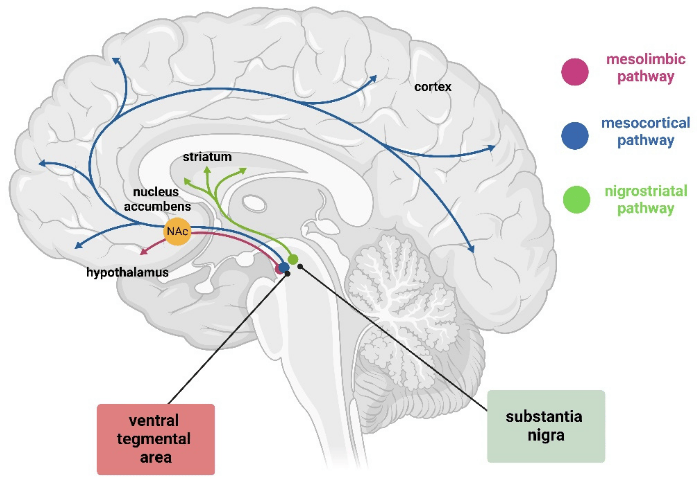

Academic Pressure
Academic pressure refers to the stress students feel when striving to meet high academic expectations. It arises from personal goals, family expectations, peer competition, or institutional standards. While some pressure can motivate students, excessive academic stress can negatively affect mental and physical well-being.

What Part of the Brain Does It Affect?
Academic pressure activates the brain's stress response, particularly affecting:
- Amygdala: Processes emotions like fear and stress, becoming overactive under academic pressure.
- Hippocampus: Supports learning and memory but is sensitive to high cortisol levels, leading to memory issues.
- Prefrontal Cortex: Helps with focus and decision-making but weakens under chronic stress.
What Hormones Are Involved?
- Cortisol: High cortisol levels from prolonged stress impair memory and concentration.
- Adrenaline: Increases heart rate and energy during stress but can impair cognition when chronically elevated.
- Serotonin and Dopamine: Chronic stress reduces these neurotransmitters, leading to sadness or lack of motivation.
Effects of Academic Pressure
- Short-Term Effects: Anxiety, headaches, and difficulty sleeping.
- Long-Term Effects: Depression, reduced self-esteem, and chronic stress-related illnesses.
Common Signs of Academic Pressure
- Frequent headaches or stomachaches.
- Difficulty sleeping or insomnia.
- Feeling anxious, irritable, or overwhelmed.
- Loss of interest in activities once enjoyed.
- Procrastination or avoidance of academic tasks.
Here Are Some Tips on How to Reduce Academic Pressure
Habits
Study Techniques: Use spaced repetition and active recall to retain information effectively.
Relaxation Techniques: Practice mindfulness, yoga, or deep breathing exercises to calm your mind.
- Set realistic goals and break tasks into manageable chunks.
- Take short, regular breaks during study sessions.
Foods
Complex Carbohydrates: Whole grains and vegetables stabilize blood sugar and energy.
Omega-3 Fatty Acids: Found in fish, walnuts, and flaxseeds, supporting brain health.
Dark Leafy Greens: Reduce cortisol and boost magnesium.
Bible Verse
"I can do all things through Christ who strengthens me." – Philippians 4:13
Inspirational Quote
"Education is the most powerful weapon which you can use to change the world." – Nelson Mandela
References
- Psychreg - Academic Pressure
- National Institutes of Health
- American Psychological Association
- PubMed
- Harvard Health